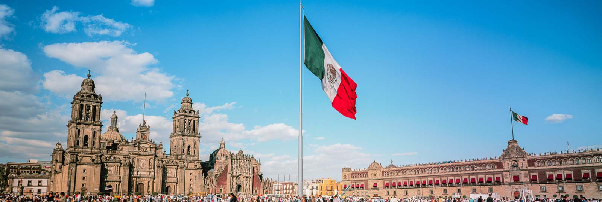

Mexico Travel Guide
by Grisha Romanovsky 2020 ©

1. Mexico is safe
People usually associate Mexico with drug cartels and mafia, however that is just a stereotype. Yes, those things exist, but mainly, the cities are completely safe and the people are quite welcoming. Approximately 40 million people visit Mexico every year and violence against tourists is especially rare. So don't let the media scare you away from this wonderful country.
People usually associate Mexico with drug cartels and mafia, however that is just a stereotype. Yes, those things exist, but mainly, the cities are completely safe and the people are quite welcoming. Approximately 40 million people visit Mexico every year and violence against tourists is especially rare. So don't let the media scare you away from this wonderful country.
2. Means of transportation
There are two main types of buses in Mexico - The Chicken Bus, the Modern Coach. The Chicken Bus is the cheapest, but not the most comfortable option, costing less than a dollar per hour! The Modern Coach is surprisingly very comfortable, it more often than not has reclining seats and snack offerings. But it will cost you 1-3$ per hour.
There are two main types of buses in Mexico - The Chicken Bus, the Modern Coach. The Chicken Bus is the cheapest, but not the most comfortable option, costing less than a dollar per hour! The Modern Coach is surprisingly very comfortable, it more often than not has reclining seats and snack offerings. But it will cost you 1-3$ per hour.
3. Packing the essentials
First things first, you need to pack is bug spray and sunscreen. When you get to Mexico, you will find that these items are overpriced (up to 10 bucks), so it's better to pack beforehand. Also, while packing all of your electronic device charges, you must get a universal adapter, in order to avoid getting stuck without all of your gadgets.
First things first, you need to pack is bug spray and sunscreen. When you get to Mexico, you will find that these items are overpriced (up to 10 bucks), so it's better to pack beforehand. Also, while packing all of your electronic device charges, you must get a universal adapter, in order to avoid getting stuck without all of your gadgets.
4. The needed documents
The government of Mexico requires current proof of citizenship, a photo ID, and a valid passport for entry into Mexico. or you might be denied entry into Mexico, even for shorter visits! You will need an FMT (Mexican Visitor's Permit), which is valid for up to 6 months. It is also recommended that you carry a photocopy of your passport and keep the original in a safe place and make sure your passport does not expire within 6 months or you might be denied entry into Mexico, even for shorter visits!
The government of Mexico requires current proof of citizenship, a photo ID, and a valid passport for entry into Mexico. or you might be denied entry into Mexico, even for shorter visits! You will need an FMT (Mexican Visitor's Permit), which is valid for up to 6 months. It is also recommended that you carry a photocopy of your passport and keep the original in a safe place and make sure your passport does not expire within 6 months or you might be denied entry into Mexico, even for shorter visits!
5. Currency
The currency in Mexico is the Mexican peso, sometimes referred to as the "Nuevo Peso,". You can change money in banks, but it is often more convenient to change currency in a casa de cambio (exchange bureau). These businesses are open longer hours than banks, usually do not have long line-ups as banks often do, and they offer comparable exchange rates (though banks may offer a slightly better rate). Check around to see where you will receive the best exchange rate (the exchange rate is usually posted prominently outside the bank or casa de cambio).
The currency in Mexico is the Mexican peso, sometimes referred to as the "Nuevo Peso,". You can change money in banks, but it is often more convenient to change currency in a casa de cambio (exchange bureau). These businesses are open longer hours than banks, usually do not have long line-ups as banks often do, and they offer comparable exchange rates (though banks may offer a slightly better rate). Check around to see where you will receive the best exchange rate (the exchange rate is usually posted prominently outside the bank or casa de cambio).
6. Vaccines
 Current health issues in Mexico include: Dengue virus, Measles, Hepatitis A, Typhoid and Malaria. So, it is very important to get all the necessary vaccinations done. You should avoid mosquito bites to prevent malaria and dengue. You may need to take a medical prescription before, during, and after your trip to prevent malaria, depending on your travel plans. Make sure you have your health insurance.
Current health issues in Mexico include: Dengue virus, Measles, Hepatitis A, Typhoid and Malaria. So, it is very important to get all the necessary vaccinations done. You should avoid mosquito bites to prevent malaria and dengue. You may need to take a medical prescription before, during, and after your trip to prevent malaria, depending on your travel plans. Make sure you have your health insurance.
Current health issues in Mexico include: Dengue virus, Measles, Hepatitis A, Typhoid and Malaria. So, it is very important to get all the necessary vaccinations done. You should avoid mosquito bites to prevent malaria and dengue. You may need to take a medical prescription before, during, and after your trip to prevent malaria, depending on your travel plans. Make sure you have your health insurance.
7. Climate
In Mexico, there are two main seasons. Although there is some variation in temperature over the year, the most obvious difference is between rainy and dry seasons. The rainy season through most of Mexico falls roughly from May through September or October. During the rest of the year, there is little or no rain. Before heading to Mexico, check the weather forecasts and read up about precautions you can take, otherwise you might come across hurricane season (June to November).
In Mexico, there are two main seasons. Although there is some variation in temperature over the year, the most obvious difference is between rainy and dry seasons. The rainy season through most of Mexico falls roughly from May through September or October. During the rest of the year, there is little or no rain. Before heading to Mexico, check the weather forecasts and read up about precautions you can take, otherwise you might come across hurricane season (June to November).
8. What food you must try
Mexican cuisine is loved all over the world for its unique taste that makes you feel at home. If you’re looking for a traditional Mexican breakfast to start your day with, chilaquiles should be on your to-eat list. Also, you should try tostadas, they are crisp-fried tortillas garnished with a variety of toppings like guacamole, chicken or frijoles (refried beans).
Mexican cuisine is loved all over the world for its unique taste that makes you feel at home. If you’re looking for a traditional Mexican breakfast to start your day with, chilaquiles should be on your to-eat list. Also, you should try tostadas, they are crisp-fried tortillas garnished with a variety of toppings like guacamole, chicken or frijoles (refried beans).
9. Places of interest
 Mexico has one of the most profound cultures in the world. So to visit Mexico and not go sightseeing is truly a crime. If you want to visit some historically crucial places, but don't know where to start, you might want to visit "Chichen Itza" first. It is a ruined ancient Maya city occupying an area of 4 square miles (10 square km) in south-central Yucatán state, Mexico. The most recognizable structure here is the Temple of Kukulkan, also known as El Castillo. This glorious step pyramid demonstrates the accuracy and importance of Maya astronomy. The temple has 365 steps—one for each day of the year.
Mexico has one of the most profound cultures in the world. So to visit Mexico and not go sightseeing is truly a crime. If you want to visit some historically crucial places, but don't know where to start, you might want to visit "Chichen Itza" first. It is a ruined ancient Maya city occupying an area of 4 square miles (10 square km) in south-central Yucatán state, Mexico. The most recognizable structure here is the Temple of Kukulkan, also known as El Castillo. This glorious step pyramid demonstrates the accuracy and importance of Maya astronomy. The temple has 365 steps—one for each day of the year.
Some other honorable mentions are: Teotihuacan, Oaxaca, Copper Canyon, and Puebla.
Mexico has one of the most profound cultures in the world. So to visit Mexico and not go sightseeing is truly a crime. If you want to visit some historically crucial places, but don't know where to start, you might want to visit "Chichen Itza" first. It is a ruined ancient Maya city occupying an area of 4 square miles (10 square km) in south-central Yucatán state, Mexico. The most recognizable structure here is the Temple of Kukulkan, also known as El Castillo. This glorious step pyramid demonstrates the accuracy and importance of Maya astronomy. The temple has 365 steps—one for each day of the year. Some other honorable mentions are: Teotihuacan, Oaxaca, Copper Canyon, and Puebla.
10. Avoid taxi-scammers
 There are fake taxi cabs with drivers that can take advantage of you, so to avoid being taken for a ride, it's best to hire an authorized taxi from an official rank (sitio) or call for one.
There are fake taxi cabs with drivers that can take advantage of you, so to avoid being taken for a ride, it's best to hire an authorized taxi from an official rank (sitio) or call for one.
These fake taxis can also be the starting point of Secuestro exprés (express kidnapping). If you are spending time in one place and find a good authorized taxi driver, grab their number; that way if you need to head out for the night or just get around, you can be sure you are getting someone reliable.
There are fake taxi cabs with drivers that can take advantage of you, so to avoid being taken for a ride, it's best to hire an authorized taxi from an official rank (sitio) or call for one. These fake taxis can also be the starting point of Secuestro exprés (express kidnapping). If you are spending time in one place and find a good authorized taxi driver, grab their number; that way if you need to head out for the night or just get around, you can be sure you are getting someone reliable.